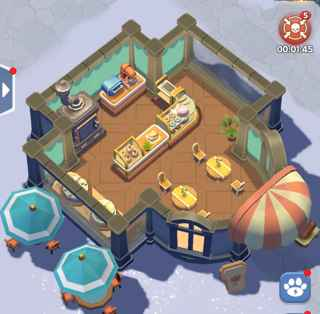
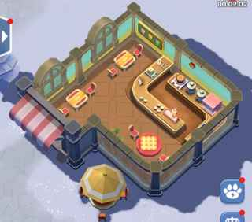
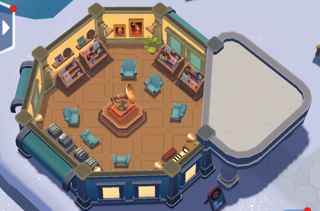

Дополнительные здания
Станция желаний и городские постройки с ежедневными наградами.
Что это? Дополнительные городские здания, которые дают одну случайную награду из своего фонда каждый день. Это отдельная механика от обычной прокачки боевых зданий.
Как открыть
1. После открытия системы Станции желаний выполняйте просьбы жителей.
2. Получайте знаки желаний за выполненные задания и проверяйте ассортимент магазина желаний.
3. На этапе Огненной топки 3 становятся доступны первые дополнительные постройки. Соберите необходимые предметы для строительства и разместите здание в городе.
4. Заходите в построенное здание ежедневно и забирайте случайную награду вручную. Обновление наград происходит в 00:00 UTC.
Важно: сам уровень ОТ-3 не заменяет прохождение заданий и сбор предметов. Если постройки нет, проверьте Станцию желаний и доступные задания жителей. Конкретную стоимость стройки сверяйте в своём игровом магазине.
Первые здания на ОТ-3
Пекарня

Среди наград: проектные планы, полировочный раствор, упрочнённый сплав и алмазы.
ОТ-3Магазин молочного чая

Сундуки со снаряжением героев, материалы усиления и алмазы.
ОТ-3Магазин пластинок

Материалы развития талисманов губернатора, чертежи, руководства и алмазы.
ОТ-3Что стоит знать о наградах
Случайный фонд: каждый день выпадает одна из наград здания, а не весь список сразу.
Уровни: в игровом видео показаны различные фонды наград для ОТ-3 и ОТ-5. Проверяйте состав фонда внутри здания.
Не забывайте забирать: награды нужно получать вручную, поэтому заглядывайте в здания каждый день.
Другие здания Станции желаний
В разделе «Огненная 1–5» также перечислены тренажёрный зал, кафе, кинотеатр, студия йоги, скалодром и ферма. Подробные условия открытия и призовые фонды этих зданий пока не подтверждены присланным видео, поэтому здесь они не указаны как проверенные.
Все здания огненной эпохи ›